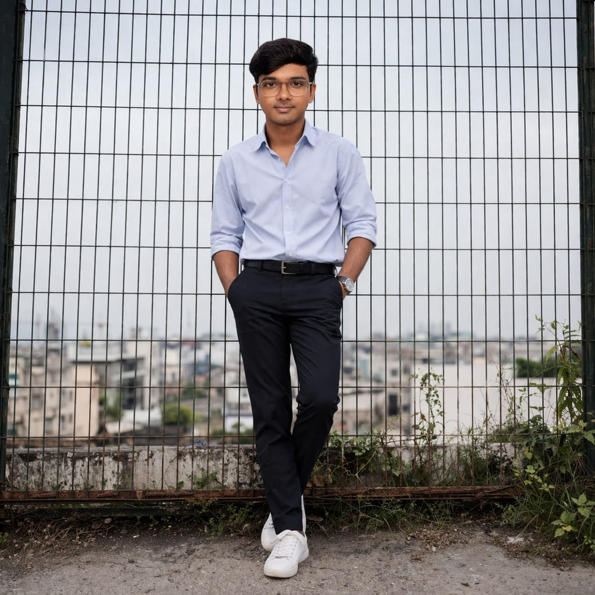

Hello, I'm Salastin sanal, a Python Full Stack Developer. I am passionate about creating web applications and continuously improving my technical skills. I enjoy solving problems and learning new things in development. I am currently looking for an opportunity where I can begin my career and gain real-world experience.
In my free time, I enjoy playing with pets, watching podcasts, and reading books. These hobbies help me stay relaxed, learn new things, and continuously improve myself.
View Resume
A sleek and interactive task management web application built using Django, designed to simplify daily productivity and organization. This project enables users to seamlessly create, update, delete, and track their tasks with a clean and intuitive user interface.
Leveraging Django’s powerful backend framework and ORM, the application ensures efficient data handling and smooth performance. It follows the Model-View-Template (MVT) architecture, demonstrating strong fundamentals in full-stack web development.
With responsive design elements and structured form handling, the project highlights my ability to build scalable applications, implement CRUD operations, and connect backend logic with an engaging frontend experience.
Technologies Used: Django, Python, HTML, CSS, SQLite.
A clean and responsive static website designed to represent a tea shop and showcase its products in an attractive and user-friendly manner. The Tea Station project focuses on delivering a visually appealing layout where users can explore different types of tea, view product sections, and understand the brand’s offerings.
Built using only HTML and CSS, the project emphasizes strong fundamentals in web design, including structured layout, styling, and responsive design techniques. It demonstrates the ability to create real-world business websites with a focus on simplicity, clarity, and smooth user experience.
Technologies Used: HTML, CSS.
A dynamic and interactive entertainment website designed to explore movies and music based on user preferences. Spotstar enables users to discover movies by selecting their favorite actors or directors, and explore music by choosing music directors or playback singers.
The application incorporates JavaScript to enhance user interaction, allowing dynamic content filtering and smooth navigation without reloading the page. This improves the overall user experience by making content selection faster and more engaging.
The project focuses on structured content organization, responsive design, and interactive UI elements. It demonstrates strong frontend development skills, including DOM manipulation, event handling, and creating real-world content filtering functionality similar to modern entertainment platforms.
Technologies Used: HTML, CSS, JavaScript.
[Have a project in mind? Let’s work together!]
Email Me